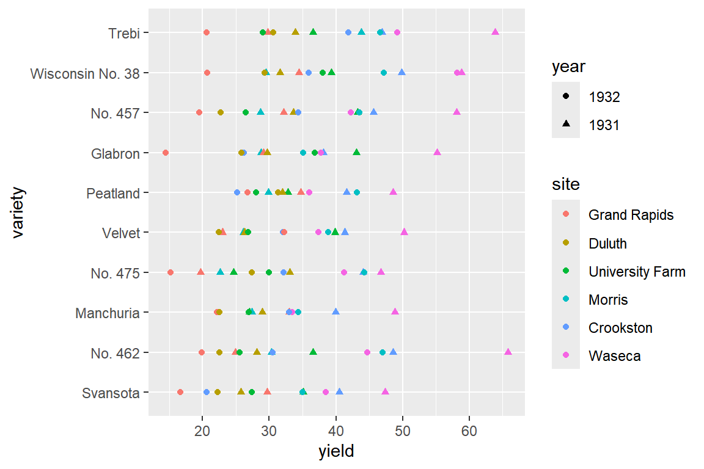

부록
‘R과 통계분석’ 연습문제 해답
“R과 통계분석” 3판에 있는 연습문제 중 일부 문제의 해답을 정리해서 보여드립니다.
2장
grade <- c("1st", "1st", "2nd", "3rd", "2nd", "3rd", "1st")
factor(grade)
## [1] 1st 1st 2nd 3rd 2nd 3rd 1st
## Levels: 1st 2nd 3rdfactor(grade, order = TRUE, level = c("3rd", "2nd", "1st"))
## [1] 1st 1st 2nd 3rd 2nd 3rd 1st
## Levels: 3rd < 2nd < 1stx1 <- c(12, 17, 19)
x2 <- c(21, 22, 25)
x3 <- c(32, 34, 35)
d1 <- data.frame(var1 = x1, var2 = x2, var3 = x3)
d1
## var1 var2 var3
## 1 12 21 32
## 2 17 22 34
## 3 19 25 35library(tidyverse)
df1 <- tibble(
x = 1,
y = 1:9,
z = rep(1:3, each = 3),
w=sample(letters, 9)
)
df1
## # A tibble: 9 × 4
## x y z w
## <dbl> <int> <int> <chr>
## 1 1 1 1 x
## 2 1 2 1 h
## 3 1 3 1 p
## 4 1 4 2 n
## 5 1 5 2 d
## 6 1 6 2 m
## 7 1 7 3 j
## 8 1 8 3 q
## 9 1 9 3 ca1 <- paste0(letters, 1:length(letters))
a1
## [1] "a1" "b2" "c3" "d4" "e5" "f6" "g7" "h8" "i9" "j10" "k11" "l12"
## [13] "m13" "n14" "o15" "p16" "q17" "r18" "s19" "t20" "u21" "v22" "w23" "x24"
## [25] "y25" "z26"a2 <- paste(a1, collapse = "-")
a2
## [1] "a1-b2-c3-d4-e5-f6-g7-h8-i9-j10-k11-l12-m13-n14-o15-p16-q17-r18-s19-t20-u21-v22-w23-x24-y25-z26"a3 <- gsub("-", "", a2)
a3
## [1] "a1b2c3d4e5f6g7h8i9j10k11l12m13n14o15p16q17r18s19t20u21v22w23x24y25z26"3장
library(rvest)
URL <- "https://en.wikipedia.org/wiki/South_Korea"
Xpath <- '//*[@id="mw-content-text"]/div[1]/table[7]' # 2024.1.22 시점4장
air_sub1 <- as_tibble(airquality) |>
filter(Wind >= mean(Wind), Temp < mean(Temp)) |>
select(Ozone, Solar.R, Month)air_sub2 <- as_tibble(airquality) |>
filter(Wind < mean(Wind), Temp >= mean(Temp)) |>
select(Ozone, Solar.R, Month)air_sub1 |>
summarize(n = n(), m_oz = mean(Ozone, na.rm = TRUE),
m_solar = mean(Solar.R, na.rm = TRUE))
## # A tibble: 1 × 3
## n m_oz m_solar
## <int> <dbl> <dbl>
## 1 42 17.6 166.air_sub2 |>
summarize(n = n(), m_oz = mean(Ozone, na.rm = TRUE),
m_solar = mean(Solar.R, na.rm = TRUE))
## # A tibble: 1 × 3
## n m_oz m_solar
## <int> <dbl> <dbl>
## 1 55 71.4 204.air_sub1 |>
group_by(Month) |>
summarize(n = n(), m_oz = mean(Ozone, na.rm = TRUE),
m_solar = mean(Solar.R, na.rm = TRUE))
## # A tibble: 5 × 4
## Month n m_oz m_solar
## <int> <int> <dbl> <dbl>
## 1 5 17 19.1 181.
## 2 6 7 20.8 150.
## 3 7 1 10 264
## 4 8 4 17.3 155.
## 5 9 13 15.6 152.air_sub2 |>
group_by(Month) |>
summarize(n = n(), m_oz = mean(Ozone, na.rm = TRUE),
m_solar = mean(Solar.R, na.rm = TRUE))
## # A tibble: 5 × 4
## Month n m_oz m_solar
## <int> <int> <dbl> <dbl>
## 1 5 1 115 223
## 2 6 9 26 195
## 3 7 20 71.5 232
## 4 8 18 77.4 182.
## 5 9 7 63.9 181.n <- 10
m <- 5
air <- airquality |>
slice_sample(n = n + m)
air_1 <- slice_head(air, n = n); air_1
## Ozone Solar.R Wind Temp Month Day
## 1 NA 127 8.0 78 6 26
## 2 9 24 10.9 71 9 14
## 3 30 193 6.9 70 9 26
## 4 NA 98 11.5 80 6 28
## 5 NA 150 6.3 77 6 21
## 6 NA 242 16.1 67 6 3
## 7 9 24 13.8 81 8 2
## 8 35 274 10.3 82 7 17
## 9 NA 250 6.3 76 6 24
## 10 28 NA 14.9 66 5 6air_2 <- slice_tail(air, n = m); air_2
## Ozone Solar.R Wind Temp Month Day
## 1 NA 135 8.0 75 6 25
## 2 52 82 12.0 86 7 27
## 3 NA 91 4.6 76 6 23
## 4 31 244 10.9 78 8 19
## 5 NA 137 11.5 86 8 11# 6장에서 소개되는 함수 anti_join()을 사용하는 방법
n <- 10
m <- 5
air_1 <- airquality |>
slice_sample(n = n); air_1
## Ozone Solar.R Wind Temp Month Day
## 1 23 220 10.3 78 9 8
## 2 77 276 5.1 88 7 7
## 3 49 248 9.2 85 7 2
## 4 NA 135 8.0 75 6 25
## 5 NA 266 14.9 58 5 26
## 6 8 19 20.1 61 5 9
## 7 36 139 10.3 81 9 23
## 8 37 279 7.4 76 5 31
## 9 135 269 4.1 84 7 1
## 10 65 157 9.7 80 8 14air_2 <- airquality |>
anti_join(air_1) |>
slice_sample(n = m); air_2
## Ozone Solar.R Wind Temp Month Day
## 1 NA 194 8.6 69 5 10
## 2 108 223 8.0 85 7 25
## 3 115 223 5.7 79 5 30
## 4 44 236 14.9 81 9 11
## 5 78 197 5.1 92 9 2car <- as_tibble(MASS::Cars93) |>
select(1:2, MPG.highway, Cylinders, Weight, Origin) |>
print(n = 3)
## # A tibble: 93 × 6
## Manufacturer Model MPG.highway Cylinders Weight Origin
## <fct> <fct> <int> <fct> <int> <fct>
## 1 Acura Integra 31 4 2705 non-USA
## 2 Acura Legend 25 6 3560 non-USA
## 3 Audi 90 26 6 3375 non-USA
## # ℹ 90 more rowscar <- car |>
mutate(make = paste(Manufacturer, Model), .before = 1) |>
select(!c(Manufacturer, Model)) |>
print(n = 3)
## # A tibble: 93 × 5
## make MPG.highway Cylinders Weight Origin
## <chr> <int> <fct> <int> <fct>
## 1 Acura Integra 31 4 2705 non-USA
## 2 Acura Legend 25 6 3560 non-USA
## 3 Audi 90 26 6 3375 non-USA
## # ℹ 90 more rows5장
barley |>
ggplot(aes(x = yield, y = variety, color = year)) +
geom_point() +
facet_wrap(facets = vars(site))
barley |>
group_by(variety) |>
summarise(mean_yield = mean(yield)) |>
arrange(desc(mean_yield))
## # A tibble: 10 × 2
## variety mean_yield
## <fct> <dbl>
## 1 Trebi 39.4
## 2 Wisconsin No. 38 39.4
## 3 No. 457 35.8
## 4 No. 462 35.4
## 5 Peatland 34.2
## 6 Glabron 33.3
## 7 Velvet 33.1
## 8 No. 475 31.8
## 9 Manchuria 31.5
## 10 Svansota 30.4airs |>
mutate(Missing = is.na(Ozone)) |>
ggplot(aes(x = Month, fill = Missing)) +
geom_bar(position = "fill") +
labs(y = "Proportion of missing data") airs |>
group_by(Month) |>
summarise(m.Oz = mean(Ozone, na.rm = TRUE)) |>
ggplot(aes(x = Month, y = m.Oz)) +
geom_bar(stat = "identity", fill = "steelblue") +
labs(y = "Mean Ozone")airs |>
mutate(gp_Wind = if_else(Wind >= mean(Wind),
"High Wind","Low Wind"),
gp_Temp = if_else(Temp >= mean(Temp),
"High Temp","Low Temp")) |>
ggplot(aes(x = Solar.R, y = Ozone)) +
geom_point() +
facet_grid(rows = vars(gp_Wind), cols = vars(gp_Temp)) mpg_1 <- mpg |>
filter(cyl == 4) |>
mutate(year = factor(year)) |>
select(model, year, displ, cty, hwy) |>
arrange(year, desc(displ), cty) |>
print(n = 5)
## # A tibble: 81 × 5
## model year displ cty hwy
## <chr> <fct> <dbl> <int> <int>
## 1 4runner 4wd 1999 2.7 15 20
## 2 toyota tacoma 4wd 1999 2.7 15 20
## 3 4runner 4wd 1999 2.7 16 20
## 4 toyota tacoma 4wd 1999 2.7 16 20
## 5 forester awd 1999 2.5 18 25
## # ℹ 76 more rowsp2 +
geom_jitter(aes(x = cty, y = hwy, color = gp_displ), size = 2) +
facet_wrap(vars(year), ncol = 1) +
labs(color = "Displacement \nGroup")
6장
top_100 <- billboard |>
pivot_longer(
cols = starts_with("wk"),
names_to = "week",
names_prefix = "wk",
names_transform = list(week = as.integer),
values_to = "rank",
values_drop_na = TRUE
) |>
print(n = 10)
## # A tibble: 5,307 × 5
## artist track date.entered week rank
## <chr> <chr> <date> <int> <dbl>
## 1 2 Pac Baby Don't Cry (Keep... 2000-02-26 1 87
## 2 2 Pac Baby Don't Cry (Keep... 2000-02-26 2 82
## 3 2 Pac Baby Don't Cry (Keep... 2000-02-26 3 72
## 4 2 Pac Baby Don't Cry (Keep... 2000-02-26 4 77
## 5 2 Pac Baby Don't Cry (Keep... 2000-02-26 5 87
## 6 2 Pac Baby Don't Cry (Keep... 2000-02-26 6 94
## 7 2 Pac Baby Don't Cry (Keep... 2000-02-26 7 99
## 8 2Ge+her The Hardest Part Of ... 2000-09-02 1 91
## 9 2Ge+her The Hardest Part Of ... 2000-09-02 2 87
## 10 2Ge+her The Hardest Part Of ... 2000-09-02 3 92
## # ℹ 5,297 more rows다른 방법
top_100 <- billboard |>
pivot_longer(cols = starts_with("wk"),
names_to = "week",
values_to = "rank"
) |>
mutate(week = parse_number(week)) |>
drop_na(rank) |>
print(n = 10)
## # A tibble: 5,307 × 5
## artist track date.entered week rank
## <chr> <chr> <date> <dbl> <dbl>
## 1 2 Pac Baby Don't Cry (Keep... 2000-02-26 1 87
## 2 2 Pac Baby Don't Cry (Keep... 2000-02-26 2 82
## 3 2 Pac Baby Don't Cry (Keep... 2000-02-26 3 72
## 4 2 Pac Baby Don't Cry (Keep... 2000-02-26 4 77
## 5 2 Pac Baby Don't Cry (Keep... 2000-02-26 5 87
## 6 2 Pac Baby Don't Cry (Keep... 2000-02-26 6 94
## 7 2 Pac Baby Don't Cry (Keep... 2000-02-26 7 99
## 8 2Ge+her The Hardest Part Of ... 2000-09-02 1 91
## 9 2Ge+her The Hardest Part Of ... 2000-09-02 2 87
## 10 2Ge+her The Hardest Part Of ... 2000-09-02 3 92
## # ℹ 5,297 more rowstop_100 |>
filter(rank == 1) |>
group_by(artist, track) |>
filter((max(week) - min(week) + 1) == n()) |>
count(sort = TRUE) |>
print(n=2)
## # A tibble: 16 × 3
## # Groups: artist, track [16]
## artist track n
## <chr> <chr> <int>
## 1 Destiny's Child Independent Women Pa... 11
## 2 Santana Maria, Maria 10
## # ℹ 14 more rowspart_df <- tibble(num = c(155, 501, 244, 796),
tool = c("screwdrive", "pliers", "wrench", "hammer"))
order_df <- tibble(num = c(155, 796, 155, 244, 244, 796, 244),
name = c("Park", "Fox", "Smith", "White", "Crus", "White", "Lee"))part_df |> left_join(order_df, by = join_by(num))
## # A tibble: 8 × 3
## num tool name
## <dbl> <chr> <chr>
## 1 155 screwdrive Park
## 2 155 screwdrive Smith
## 3 501 pliers <NA>
## 4 244 wrench White
## 5 244 wrench Crus
## 6 244 wrench Lee
## 7 796 hammer Fox
## 8 796 hammer Whitepart_df |> inner_join(order_df, by = join_by(num))
## # A tibble: 7 × 3
## num tool name
## <dbl> <chr> <chr>
## 1 155 screwdrive Park
## 2 155 screwdrive Smith
## 3 244 wrench White
## 4 244 wrench Crus
## 5 244 wrench Lee
## 6 796 hammer Fox
## 7 796 hammer White7장
res <- vector("double", 12)
res[1] <- 0; res[2] <- 1
for(i in 1:10){
res[i+2] <- res[i]+res[i+1]
}
res
## [1] 0 1 1 2 3 5 8 13 21 34 55 89map(airs_M, ~map_dbl(.x, mean, na.rm = TRUE))
## $`5`
## Ozone Solar.R Wind Temp
## 23.61538 181.29630 11.62258 65.54839
##
## $`6`
## Ozone Solar.R Wind Temp
## 29.44444 190.16667 10.26667 79.10000
##
## $`7`
## Ozone Solar.R Wind Temp
## 59.115385 216.483871 8.941935 83.903226
##
## $`8`
## Ozone Solar.R Wind Temp
## 59.961538 171.857143 8.793548 83.967742
##
## $`9`
## Ozone Solar.R Wind Temp
## 31.44828 167.43333 10.18000 76.90000map(airs_M, ~map_dbl(.x, ~sum(is.na(.x))))
## $`5`
## Ozone Solar.R Wind Temp
## 5 4 0 0
##
## $`6`
## Ozone Solar.R Wind Temp
## 21 0 0 0
##
## $`7`
## Ozone Solar.R Wind Temp
## 5 0 0 0
##
## $`8`
## Ozone Solar.R Wind Temp
## 5 3 0 0
##
## $`9`
## Ozone Solar.R Wind Temp
## 1 0 0 0airquality |>
group_by(Month) |>
summarise(across(1:4, list(Mean = ~mean(.x, na.rm = TRUE))))
## # A tibble: 5 × 5
## Month Ozone_Mean Solar.R_Mean Wind_Mean Temp_Mean
## <int> <dbl> <dbl> <dbl> <dbl>
## 1 5 23.6 181. 11.6 65.5
## 2 6 29.4 190. 10.3 79.1
## 3 7 59.1 216. 8.94 83.9
## 4 8 60.0 172. 8.79 84.0
## 5 9 31.4 167. 10.2 76.9참고문헌
Becker, Chambers, R. A., and A. R. Wilks. 1988. The New s Language: A Programming Environment for Data Analysis and Graphics. Pacific Grove, California: Wadsworth & Brooks/Cole Advanced Books & Software.
Cleveland, William S. 1993. Visualizing Data. New Jersey: Hobart Press.
Jones, Mailardet, O., and A Robinson. 2009. Introduction to Scientific Programming and Simulation Using r. Chapman & Hall/CRC.
Venables, W. N., and B. D. Ripley. 2000. S Programming. Springer-Verlag.
Wickham, Hadley. 2019. Advanced r. 2nd ed. CRC Press.